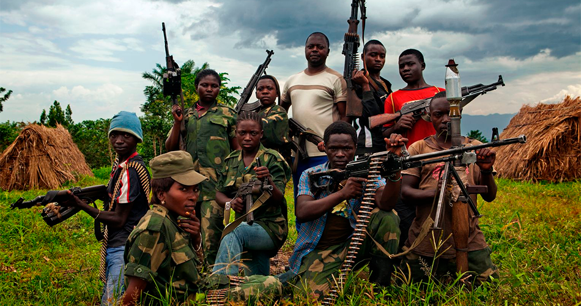
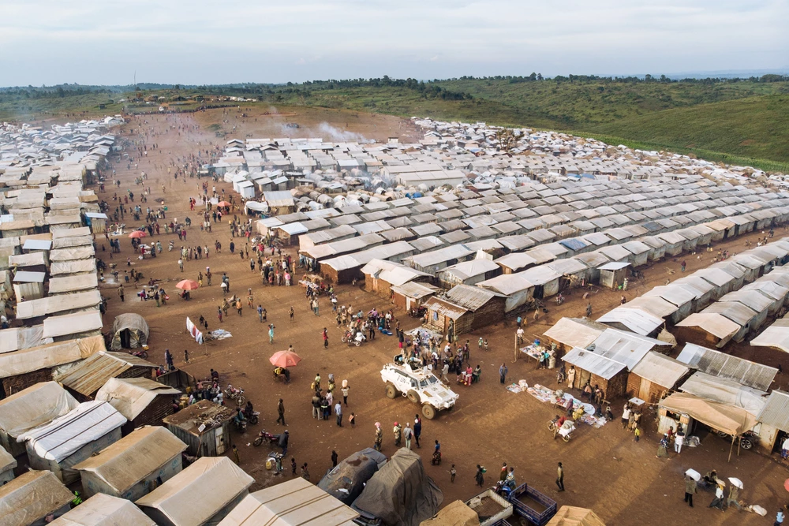
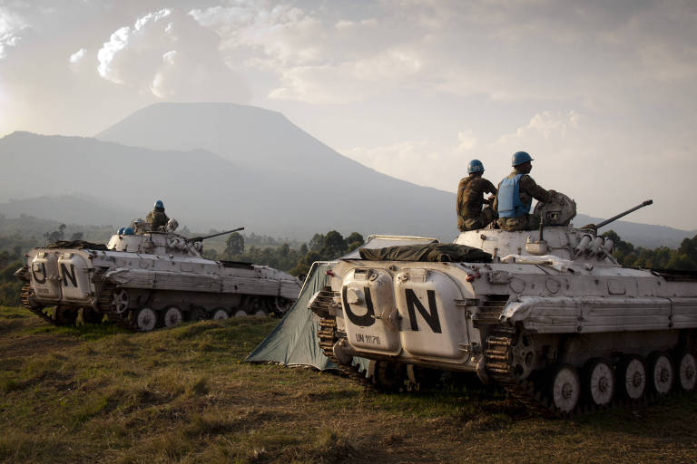
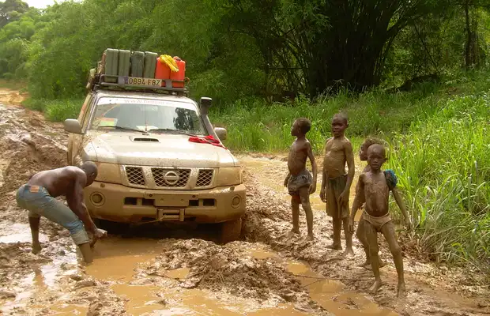

Grupo 5: Conflito na República Democrática do Congo (RDC)
Clique em um tópico para ver o conteúdo.
Onde acontece o conflito?

O conflito concentra-se no leste da República Democrática do Congo (RDC), com destaque para as províncias de Kivu do Norte, Kivu do Sul e Ituri. Trata-se de uma zona estratégica devido à localização fronteiriça com países como Ruanda e Uganda, bem como pelas disputas que chegam a envolver a periferia da capital, Kinshasa.
A região é marcada por disputas territoriais severas e pelo avanço militar insurgente em centros urbanos estratégicos, como as cidades de Goma e Bukavu. A proximidade geográfica com as fronteiras facilitou o deslocamento transfronteiriço de tropas, milícias e populações refugiadas ao longo de décadas.
Feito por Rafaella
Como surgiu o conflito?

As raízes do conflito remontam ao transbordamento do genocídio de Ruanda em 1994, quando centenas de milhares de refugiados e extremistas hutus cruzaram a fronteira para o antigo Zaire. A presença e reorganização dessas milícias provocaram a reação do novo governo tutsi ruandês, desencadeando a Primeira Guerra do Congo (1996-1997) para derrubar o regime de Mobutu Sese Seko com o apoio de rebeldes locais liderados por Laurent Kabila.
A Segunda Guerra do Congo (1998-2003) eclodiu após o rompimento das alianças entre Kinshasa e o governo de Ruanda. Mesmo após a formalização de acordos de paz a partir de 2002 e a subsequente realização de eleições, a instabilidade no leste persistiu, impulsionada pelo surgimento de novos grupos insurgentes como o M23 e pela proliferação de disputas por recursos locais.
Feito por Yasmim
Quem participa?

As forças governamentais da RDC (FARDC) combatem ao lado de milícias locais conhecidas como Wazalendo, além de contarem historicamente com o suporte de missões de paz da ONU (MONUSCO) e de países aliados. No campo oposto atuam diversas milícias armadas e coalizões rebeldes, com destaque para a Aliança Fleuve Congo (AFC) e o grupo insurgente M23, majoritariamente tutsi.
O conflito conta com intensa interferência de atores regionais e globais. Governos vizinhos como Ruanda e Uganda desempenham papéis diretos ou indiretos na dinâmica militar, enquanto potências internacionais influenciam o cenário econômico — a China detém presença expressiva ao controlar vastas minas protegidas pelo exército congolês e fornecer equipamentos militares, enquanto os EUA monitoram o setor geopolítico e impõem sanções contra atores armados.
Feito por Heitor
Quais interesses?

O principal vetor geopolítico e econômico é a disputa pelas abundantes reservas minerais da RDC, que incluem coltan, cobalto, cobre, ouro, zinco e urânio. Esses metais de terras raras são indispensáveis para a indústria global de tecnologia, transição para energia limpa e fabricação de eletrônicos avançados, motivando o financiamento contínuo de grupos armados e operações de mineração ilegal.
Paralelamente, existem motivações de segurança nacional, étnicas e de soberania política. Ruanda e outros países vizinhos justificam suas intervenções com a garantia de segurança contra grupos rebeldes fronteiriços e a proteção de populações étnicas aliadas, enquanto potências globais buscam garantir o controle sobre as cadeias globais de fornecimento mineral.
Feito por Beatriz
Quais os impactos?

A crise humanitária é considerada uma das mais letais do mundo, registrando aproximadamente seis milhões de mortes acumuladas desde 1996 devido aos combates diretos, à violência brutal, à fome e a surtos de doenças como o Ebola. Mais de sete milhões de pessoas foram forçadas ao deslocamento interno, enfrentando o colapso dos sistemas de saúde e severo desabastecimento.
Social e politicamente, o conflito gerou o rompimento de relações diplomáticas entre Kinshasa e Ruanda, além de promover graves violações dos direitos humanos, incluindo o recrutamento de crianças-soldados e o uso de trabalho infantil nas áreas de mineração. A instabilidade crônica mantém as populações locais presas a um ciclo contínuo de insegurança e exploração.
Feito por Rafaella
📝 Quiz: Conflito na República Democrática do Congo
Feito por Rafaella